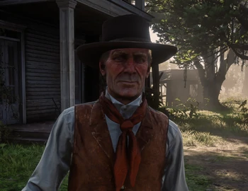

Hosea Matthews
Roi de l'escroquerie, oscillant entre gentleman et brigand, Hosea est le meilleur ami de Dutch, ainsi que son bras droit depuis plus de vingt ans. Intelligent et vif d'esprit, il est passé maître dans l'art de baratiner pour parvenir à ses fins.
Histoire
Peu de choses sont connues de Hosea avant 1878, année où Dutch et lui se rencontrent alors qu'ils tentaient de se voler entre eux. Suite à cela, il devient le meilleur ami de Dutch et se présente comme son bras droit lors de l'élaboration de la bande de hors-la-loi qu'ils fondent la même année. Hosea est perçu comme un homme sage, intelligent et complémentaire de Dutch. Il conseille souvent ce dernier sur l'approche à avoir lors de leurs méfaits. Il est également le plus ancien membre de la bande (avec Dutch) et en est le doyen de par son âge. Enfin, il est plus pragmatique que Dutch (dans un premier temps) dans sa manière d'appréhender les problèmes auxquels fait face la bande. Hosea a eu une relation avec Bessie, une femme du gang. A un moment donné, alors qu'Arthur Morgan (le protagoniste) est encore jeune, tous deux tentent brièvement de quitter la vie de hors-la-loi. Mais Hosea ne peut s'y résoudre et retombe nécessairement dans ses travers. Bessie meurt avant 1899. Bras droit de Dutch van der Linde, il est une figure majeure de la bande de hors-la-loi dont ils font partie.
Statut - Décédé (1899) Sexe - Masculin Nationalité - Américaine Occupation - Bras droit de Dutch
Anecdote Hosea est enterré aux côtés de Lenny Summers.